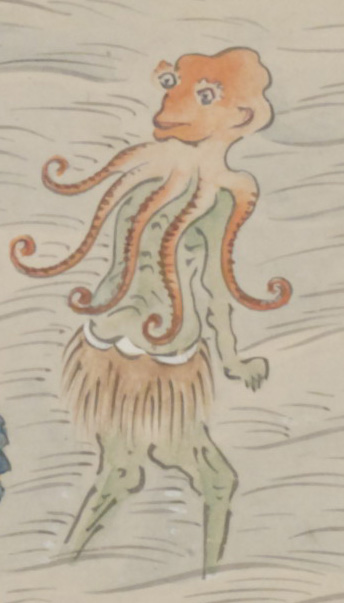

← 图鉴索引

頭部が蛸で腰蓑を着けた緑色の体の化物。大蛇の眷属。
著作者：英一蝶／出典：親書誌：U426_nichibunken_0094：田原藤太秀郷；タワラトウタヒデサト／日付：2008／資源識別子：U426_nichibunken_0094_0006_0001
Copyright (c)2010- International Research Center for Japanese Studies, Kyoto, Japan. All rights reserved.